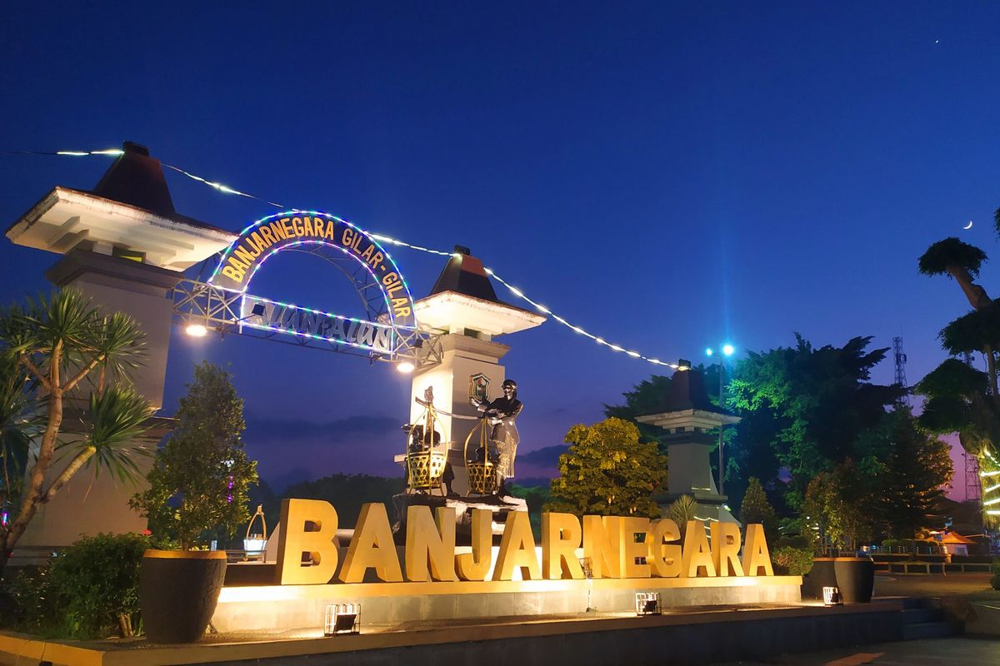

Kota Banjarnegara
Banjarnegara
Kabupaten Banjarnegara adalah kabupaten di Jawa Tengah yang terkenal dengan lanskap pegunungan, Sungai Serayu, dan kuliner khasnya, Dawet Ayu. Dengan luas sekitar 1.064 km persegi, kabupaten ini berbatasan dengan Kabupaten Pekalongan dan Batang di utara, Wonosobo di timur, Kebumen di selatan, serta Banyumas dan Purbalingga di barat.Wilayahnya merupakan lokasi wisata penting seperti Dataran Tinggi Dieng, yang menawarkan keindahan alam dan situs sejarah.
Banjarnegara memiliki topografi yang beragam, mulai dari dataran rendah hingga pegunungan. Ketinggian wilayahnya bervariasi antara 40 hingga 2.300 meter di atas permukaan laut, dengan sebagian besar wilayah berada pada ketinggian 100 hingga 500 meter dpl.
| No | Jenis Kelamin | Jumlah |
|---|---|---|
| 1 | Laki-Laki | 536.347 jiwa |
| 2 | Perempuan | 521.215 jiwa |
| 3 | Total | 1.057.562 jiwa |
Kecamatan
- Bawang
- Banjarmangu
- Banjarnegara
- Batur
- Pagedongan
- Mandiraja
- Punggelan
- Purwonegara
- Rakit
- Sigaluh
- Susukan
- Wanadadi
- Pandanarum
Website Pemkot Banjarnegara 